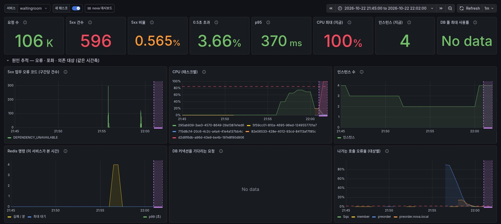
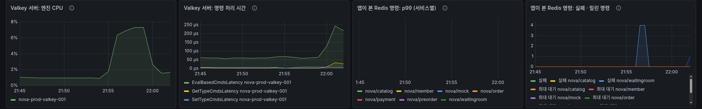

NOVA
핵심 서비스 설계와
트러블슈팅
대기열, 사전예약 접수, 외부 연동 서비스의 구조와 부하 상황에서 고친 문제
백엔드 담당 · 대기열 · 사전예약 접수 · 외부 연동 worker
차례 도착 후 입장 확인 (p95)
31 → 3 초
목차
목차
01
대기열
대기열 아키텍처
진입 판정과 입장 흐름
입장 속도 조절
입장 알림 지연 개선
대기열 503
그 밖의 트러블슈팅
02
사전예약 접수
접수 아키텍처
순번 발급: 빠진 번호 없이
MySQL 지표로 찾은 병목
잠금 구간 단축
동시 접수 제한
두 개선 뒤 접수 응답
재전송 처리
Outbox 메시지 발행
03
외부 연동
worker 아키텍처
mock 응답 판정
차단기 열림 판정
동시 요청 수 조절
차단기 반복 열림 개선
그 밖의 트러블슈팅
전체 흐름
예약 한 건이 지나가는 길
세 서비스가 한 요청을 나눠 맡고 사용자 응답은 접수에서 끝남
→
01
대기열
줄을 세우고 접수 서버가 감당할 만큼만 입장
Valkey 대기 줄
→
02
사전예약 접수
예약 · 순번 · Outbox를 한 트랜잭션에 저장하고 바로 응답
MySQL
→
→
03
외부 연동 worker
외부 응답 속도에 맞춰 보내는 양을 조절
DLQ · Slack 알림
⇄
사용자가 기다리는 구간 · 접수 202 응답까지
큐 뒤에서 처리 · 외부가 느려도 접수에 영향 없음
목표
오픈 직후 급증
10초 5,000명
진입 실패 0건
응답 시간
p99 500ms
진입 · 순번 조회 · 접수
순번
중복 · 빈틈 0
상품마다 1부터 도착 순서대로
외부 연동
유실 · 중복 0
외부가 멈춰도 접수는 계속
01
대기열
몰린 사람을 줄 세우고, 접수 서버가 감당할 만큼만 입장
1대기열 아키텍처
2진입 판정과 입장 흐름
3입장 속도 조절
4입장 알림 지연 개선
5대기열 503
6그 밖의 트러블슈팅
01 대기열 · 아키텍처
대기열 아키텍처
몰린 요청은 대기열이 받아 줄을 세우고, preorder가 감당할 만큼만 입장 · 10초에 5,000명 진입 시 거절 0건
→진입
→차례가 된
접수만
2↕줄 서기, 순번 조회, 입장 인원 공유
ElastiCache Valkey
대기 줄 하나 · 입장 인원
1진입 판정은 모든 서버가
100ms 이내
진입 응답 p95 · 서버 대수만큼 처리량 증가
2줄은 Valkey 한 곳에
0건
앞지르기 · 서버가 여러 대여도 도착 순서대로 순번
3입장 인원은 1대만 계산
1초마다
여러 대가 각자 계산하면 입장 인원이 겹쳐 증가
4preorder 상태 반영
5초마다
처리 가능량을 보고받아 입장 속도 상한으로 사용
01 대기열 · 진입 판정
진입 판정과 입장 흐름
위에서부터 확인해 처음 해당하는 결과로 응답 · 확실하지 않으면 줄로 보내 새치기 방지
| 순서 | 조건 | 이유 | 결과 |
|---|
| 1 | 접수 기간이 아님 | 오픈 전이거나 마감 후 | 거절 409 |
| 2 | 줄이 이미 너무 김 | 최대 대기 시간 안에 입장할 수 없는 길이 | 거절 429 |
| 3 | 줄 정보가 5초 넘게 오래됨 | 그사이 누가 줄을 섰는지 알 수 없음 | 줄 서기 202 |
| 4 | 이미 기다리는 사람이 있음 | 먼저 온 사람을 앞지르지 않도록 | 줄 서기 202 |
| 5 | 입장 여유가 남아 있음 | 한산할 때만 해당 | 바로 입장 200 |
줄을 선 뒤의 흐름
01
대기 번호 받음
현재 순번과 다음 확인 시각
→
02
순번 확인
대기가 길수록 드물게 (1~30초)
250초 동안 확인이 없으면 줄에서 제외
→
03
입장권 발급
차례가 되면 발급, 120초 동안 유효
→
04
접수
입장권 확인 후 preorder로 전달
01 대기열 · 입장 속도
입장 속도 조절 (AIMD)
preorder가 버거워하면 입장 속도를 바로 절반으로 줄이고, 회복되면 10%씩 천천히 복구
입장 속도 = 관리자 설정(기본 초당 150명)과 preorder 처리 가능량 중 작은 값 × 감속 배율(10~100%)
줄임
나쁜 응답 20% 이상 → 절반
최근 5초 응답 기준 (최소 20건)
최저 10%까지
늘림
5% 미만이 10초 지속 → 10%씩
한 번에 되돌리면 다시 무너지므로 단계적으로
나쁜 응답
서버 오류, 응답 전 끊김, 2초 초과
한 사람의 응답은 1초에 1건만 집계
01 대기열 · 트러블슈팅
입장 알림 지연 개선
대기 화면은 서버에 "내 차례인가"를 주기적으로 물어보는 구조 · 오픈 직후에는 차례가 와도 화면이 30초 가까이 늦게 바뀜
차례가 왔는데 화면은 28초 동안 '대기 중'
0초10초20초30초
원인
다음 확인 간격은 서버가 예상 대기 시간으로 정함
(5초 미만 1초, 2분 이상 30초)
예상 대기 시간 = 앞 인원 ÷ 상품의 입장 속도
오픈 직후에는 상품의 입장 속도가 아직 0이라 계산 불가 → 가장 긴 30초
조치
상품의 입장 속도가 아직 0이면
전체 입장 속도(기본 초당 150명)로 대신 계산
→ 차례가 가까운 사람은 1~3초 간격으로 확인
결과 · 차례가 온 뒤 화면이 바뀌기까지 (p95)
31초→3초
01 대기열 · 트러블슈팅
대기열 503: Valkey가 아니라 대기열 CPU
대기열 부하 시험 · 대기열에서 5xx 596건, 오류율 0.565%로 합격 기준 0.1% 초과
대기열 서비스 대시보드

같은 시간대의 Valkey 서버

✕
Valkey 과부하?
엔진 CPU 최대 약 7%
명령 처리 0.25ms 이하
✓
대기열 CPU 포화
CPU 100% → Redis 응답을 제때 처리 못 해 앱 쪽 시간 초과
첫 시험5xx 596건
원인
첫 몰림에 CPU 절반을 JIT 컴파일이 사용 · 증설은 6~10분 뒤
조치
대기열 태스크 1 vCPU → 2 vCPU
회차 오픈 15분 전 사전 증설 · 단계 증설 추가
재시험몰림 첫 10초 503 870건
원인
모두 Redis 명령 시한 500ms 초과 · Valkey CPU 2%
조치
Redis 명령 시한 500ms → 1.5초
예상 방문자 수가 빈 회차도 최소 3대로 증설
01 대기열 · 트러블슈팅
그 밖의 트러블슈팅
입장권 재사용, 초과 입장, 배포 중 오류 · 문제 → 원인 → 조치 → 결과
보안
입장권 한 장으로 여러 번 접수
원인
서명 끝에 '='를 붙여도 해독하면 같은 값이라 통과 · '사용한 입장권' 기록과는 글자가 달라 새 입장권으로 인정
변형 입장권 통과→한 글자라도 다르면 거절
정확성
계획보다 많은 인원 입장
원인
대표 서버가 입장 인원 반영을 재시도하면 같은 계산이 두 번 반영
조치
계산마다 번호를 기록 · 이미 반영한 번호는 건너뜀
재시도 시 두 번 반영→몇 번을 재시도해도 한 번
배포
새 서버가 최대 5분 동안 요청 처리 못 함
원인
로그인 검증 키(JWKS) 응답이 비어도 성공으로 처리 → 5분 뒤 정기 갱신까지 대기
조치
빈 응답도 실패로 보고 1초부터 두 배씩, 최대 10초 간격으로 재요청
최대 5분→최대 10초 간격 재시도
배포
preorder 배포 중 접수 오류 500
원인
종료 중인 preorder가 응답 전에 연결을 끊으면 서버 오류(500)로 응답
조치
503과 "2초 뒤 재시도" 안내 · 같은 요청 키로 다시 보내 중복 없이 접수
500 실패→503 · 2초 뒤 재시도
02
사전예약 접수
오픈 순간 몰리는 접수를 정확하고 빠르게, 다른 기능에 피해 없이
1접수 아키텍처
2순번 발급: 빠진 번호 없이
3MySQL 지표로 찾은 병목
4잠금 구간 단축
5동시 접수 제한
6두 개선 뒤 접수 응답
7재전송 처리
8Outbox 메시지 발행
02 사전예약 · 아키텍처
사전예약 접수 아키텍처
대기열을 통과한 접수만 받아, 예약 저장과 순번 발급을 한 트랜잭션으로 처리
접수 한 건이 지나가는 길
→
preorder 서버 1~5대
동시 접수 제한
허가받은 요청만 커넥션 사용
16쪽→
→
예약 저장 → 순번 발급
한 트랜잭션 · 순번 잠금은 맨 끝에 짧게
13 ~ 15쪽
⇄
RDS MySQL
예약 · Outbox
상품별 다음 순번
이 파트에서 보여 줄 것
13쪽 · 정확성
빠진 번호 없는 순번
1 2 3 4
순번을 예약과 같은 트랜잭션에서 발급
14 · 15쪽 · 처리량
잠금 시간 단축
7 → 3개
순번 잠금을 잡은 채 하는 작업 수
16쪽 · 격리
커넥션 독점 방지
10 → 4개
한 상품 접수가 쓰는 DB 커넥션 최대치
18쪽 · 안전성
재전송해도 예약은 하나
1건
같은 요청 키면 같은 예약과 순번 응답
02 사전예약 · 정확성
순번 발급: 빠진 번호 없이
저장에 실패한 접수가 번호만 가져가면 순번에 빈칸이 생김 → 번호 발급과 예약 저장을 한 트랜잭션으로 묶음
번호를 따로 발급하면 (Valkey)
3번째 접수가 저장에 실패해도
번호 3은 이미 사용
예약과 함께 발급하면 (MySQL)
저장에 실패하면
번호도 함께 취소
대가 같은 상품의 접수가 순번 행 하나를 차례로 잠가야 함 → 잠금 시간이 곧 처리 한계
02 사전예약 · 처리량
MySQL 대시보드로 찾은 접수 병목
부하 시험 · 잠금 구간 단축 전 · 상품 하나의 접수가 초당 약 200건에서 정체
1
DB 자원은 여유
RDS CPU 최대 약 17% · 연결 사용률 12.8%
2
회차 행 SELECT의 97%가 잠금 대기
총 32.3초 중 31.4초 · 접수 1건마다 1번 실행 (3.18K)
3
오픈 직후 행 잠금 대기 증가
같은 상품 접수가 순번 행 하나에 줄을 섬
왜 막혔나
접수 1건이 회차 행 잠금을 쥔 채 SQL 7개 실행
↓
다음 접수는 커넥션을 쥔 채 잠금 대기
↓
풀 10개가 한 상품 대기로 참 → 무관한 조회도 커넥션 2초 대기 뒤 503
다음 장 → 잠금 구간 단축 · 동시 접수 제한
02 사전예약 · 처리량
잠금 구간 단축
같은 상품의 접수는 순번 행 하나를 차례로 잠금 → 잠금이 짧을수록 다음 접수가 빨리 진행
접수 트랜잭션 한 건의 작업 순서
순번 행 잠금
중복 요청 확인
순번 +1
예약 저장
이력 저장
외부 작업 저장
메시지 저장
커밋
잠금 구간 · 작업 7개 + 커밋 동안 같은 상품의 다음 접수 대기
중복 요청 확인
판매 상태 확인
예약 저장
(순번 비움)
이력 저장
외부 작업 저장
메시지 저장
순번 행 잠금
순번 +1
순번 기록
커밋
잠금 없음 · 같은 상품의 다른 접수와 동시에 진행
잠금 · 작업 3개 + 커밋
개선 전 실측 서버 1대 기준 상품 하나의 접수 한계 초당 약 200건 → 대기열 기본 입장 속도(초당 150명)의 근거
7개→3개
판매 상태, 접수 기간은 잠근 뒤 한 번 더 확인
4번→0번
기본 격리 수준이 빈 구간까지 잠가 서로 대기 → READ COMMITTED로 고정
02 사전예약 · 격리
동시 접수 제한
한 상품에 접수가 몰려도 DB 커넥션을 다 쓰지 못하게 제한 · 다른 상품 접수와 조회는 정상
서버 1대의 DB 커넥션 10개를 누가 쓰는가 · 상품 A에 접수가 몰린 순간
제한 전
상품 A 접수 10개모두 같은 순번 잠금을 기다리는 중
다른 상품 접수, 예약 조회는 쓸 커넥션이 없어 실패
제한 후
상품 A 접수 4개
다른
상품
조회 · 이벤트 처리 · 메시지 발행
나머지 상품 A 접수는 커넥션 없이 서버 메모리에서 차례를 기다림
제한 방법 · 트랜잭션 전에 세마포어 두 개에서 허가
허가 ①
상품별 4개
잠금 중 1 + 잠그기 전 저장 2 + 다음 차례 1
→
허가 ②
서버 전체 5개
커넥션의 절반 · 나머지는 조회, 이벤트용
→
3초 안에 허가를 못 받으면 503 + 1~3초 뒤 재시도 안내 · 상품별 허가를 먼저 받아 한 상품이 서버 전체 허가를 쥐고 대기하지 않도록
10개→4개
늘려도 같은 잠금 앞에서 대기만 증가
실패→정상
접수 외 기능용 커넥션 5개 항상 확보
02 사전예약 · 처리량 결과
잠금 구간 단축 + 동시 접수 제한 뒤 접수 응답
14쪽 원인: 회차 행 SELECT 시간의 97%가 잠금 대기 → 15쪽 잠금 구간 단축과 16쪽 동시 접수 제한을 함께 적용해 같은 조건으로 재측정
변경 전
회차 행 잠금 · SQL 7개 (예약 · 이력 · 작업 · Outbox · 순번)커밋
잠금 단축
예약 · 이력 · 작업 · Outbox 먼저 저장 (잠금 밖)잠금 · SQL 3개커밋
동시 접수
제한
넘친 접수는 커넥션을 잡기 전 메모리에서 대기 (격벽) · 상품당 동시 접수 4건 · 3초 넘으면 503 + 재시도 안내
시험 규모 · rush 시나리오오픈 10초에 5,000명 진입 (초당 500명)대기열 → 접수 → 절반은 주문 · 결제 시도까지상품 조회 배경 초당 200건
0.5초 안에 끝난 비율
49.8%
92.8%
43%p 증가
서버 오류 (5xx)
0.82%
0.05%
94% 감소
02 사전예약 · 안전성
재전송 처리: 몇 번 보내도 예약은 하나
대기열이 503과 함께 재시도를 안내하므로 같은 접수가 여러 번 도착 · 같은 요청 키면 같은 결과로 응답
| 상황 (예시) | 응답 |
|---|
| 첫 접수 · 요청 키 K, 상품 A | 예약 생성, 순번 1024 |
| 응답을 못 받아 키 K로 재전송 | 새로 만들지 않고 같은 예약, 같은 순번 1024 응답 |
| 키 K로 다른 상품, 옵션 요청 | 422 거절 어느 항목이 다른지 안내 |
| 다른 키로 같은 상품 동시 접수 | DB 고유 제약으로 1건만 저장 · 한 회원은 한 상품에 예약 1건 |
| 마감 직전 접수를 마감 직후 재전송 | 마감으로 거절 → 기존 예약 응답 |
결과
재전송해도 예약 1건,
순번 1개
같은 요청 키의 기존 예약을 먼저 찾아 그대로 응답
고친 문제
마감 직전 접수의 재전송이 거절됨
저장해 둔 마감 시각으로 먼저 판단 → 이미 접수된 요청도 거절
같은 요청인지 먼저 확인하고, 마감은 순번을 발급하는 순간의 시각으로 판단
02 사전예약 · 메시지 발행
Outbox: 외부 등록 메시지를 잃지 않게
예약과 보낼 메시지를 한 트랜잭션에 기록 · 커밋되면 메시지도 반드시 남고 롤백되면 메시지도 없음
한 트랜잭션
예약 · 이력 · 외부 작업 ·
Outbox 행 INSERT
안전한 길 · 남은 행 다시 보내기
⇢
남은 Outbox 행
버퍼 넘침 · 전송 실패 · 태스크 종료
⇢
Relay 10초마다
SKIP LOCKED로 가져와 리스를 걸고 커밋 뒤 전송
⇢
✕외부 동기 호출
외부가 느려지면 접수도 함께 느려짐
✕저장 후 SQS 직접 발행
커밋과 발행 사이에 죽으면 메시지 유실
✓Outbox + SQS
못 보낸 행도 DB에 남아 다시 발행 · 두 번 가도 받는 쪽이 이벤트 id로 한 번만 반영
고친 것 Relay가 행 잠금을 쥔 채 SQS 호출 → 리스를 걸고 커밋한 뒤 트랜잭션 밖에서 전송 · 발행 스레드 32개가 커넥션 경쟁 → 2개가 10건씩 묶어 전송
03
외부 연동 (worker)
느리고 가끔 실패하는 외부 시스템을 견디는 호출
1worker 아키텍처
2mock 응답 판정
3차단기 열림 판정
4동시 요청 수 조절
5차단기 반복 열림 개선
6그 밖의 트러블슈팅
03 외부 연동 · 아키텍처
외부 연동(worker) 아키텍처
접수와 외부 등록을 SQS로 분리하고, 외부 시스템(mock)이 버틸 만큼만 호출
→
worker 서버 1~4대 (DB 없음)
↓
② 동시 요청 수 조절
응답 속도에 맞춰 자동 조절
↓
③ 호출, ④ 응답 판정
결과 알림, 재시도, DLQ 중 하나
⇄
외부 mock
1~5대
평균 0.5초, 실패 5%
01 분리
접수와 외부 등록 분리
외부 시스템이 느려도 접수 응답은 0.5초 이내 (p99)
02 조절
mock은 거절 대신 느려짐
몰려도 오류를 내지 않음 → 보내는 양은 worker가 직접 조절
03 확인
시간 초과면 결과를 모름
같은 키로 먼저 조회 → 필요할 때만 다시 등록
03 외부 연동 · 응답 판정
mock 응답 판정
같은 실패라도 바로 다시 보낼지, 결과를 먼저 확인할지에 따라 다음 동작이 다름
| 판정 | 해당 응답 | 다음 동작 | 차단기 실패 |
|---|
성공 | 201과 외부 예약 번호 | 결과 알림 후 작업 종료 | 아니요 |
일시 실패 | 연결 실패, mock의 일시 장애(500), 앞단 장비의 502·503 | 저장되지 않은 것이 확실 → 0.2~0.5초 뒤 한 번 더 | 예 |
대기 요청 | 429, 기다릴 시간이 붙은 503 | 알려 준 시간만큼 기다린 뒤 재시도 | 예 |
결과 모름 | 3초 넘게 응답 없음, 도중 끊김, 504 등 | 재전송 없이 다음 차례에 조회부터 | 예 |
거절 | 잘못된 요청(400), 취소된 키(409), 내용 불일치(422) | 다시 보내도 같은 결과 → 바로 최종 실패 | 아니요 |
설정 오류 | 주소 오류(404 NO_SUCH_ENDPOINT) 등 | 설정 수정까지 재시도, 30분 지나면 실패 | 아니요 |
호출 안 함 | 차단기 열림, 초당 호출 한도 초과 | 시도 횟수를 쓰지 않고 잠시 뒤 다시 | 아니요 |
결과 모름 다음 차례 → 같은 키로 조회 → 등록돼 있으면 성공, 취소돼 있으면 거절, 없으면 같은 내용으로 다시 등록
03 외부 연동 · 차단기
차단기 열림 판정
mock이 고장 나면 호출을 멈추고, 쉬는 시간을 두 배씩 늘리며 시험 호출 3건으로 회복 확인
차단기
닫힘
열림 10초
열림 20초 (두 배)
닫힘
1
2
3
worker
평소대로 호출
호출 안 함
3
호출 안 함
3
평소대로
0초20초40초60초80초
① 열림
최근 20건 중 실패 절반 이상
최소 10건이 모인 뒤 판단 · 잘못된 요청과 설정 오류는 실패에서 제외
② 시험 호출
열린 동안은 작업을 미룸
시험 3건이 실패하면 두 배 더 열림 (최대 2분)
③ 닫힘
시험 3건 중 2건 성공
느린 응답은 실패로 세지 않음 · 속도 대응은 AIMD 담당
03 외부 연동 · 요청 수 조절
동시 요청 수 조절 (AIMD)
mock은 몰리면 느려지기만 함 → 동시에 보내는 요청 수를 10초마다 응답 속도에 맞춰 재설정
worker 1대가 동시에 보내는 요청 수 (예시)
① 빠르면 두 배씩 (2 → 80까지 약 1분) · ② 느려지면 절반 · ③ 줄인 뒤에는 1씩
④ 차단기가 열리면 바로 2 · ⑤ 직전 값의 절반까지 두 배, 이후 1씩
줄임
절반으로 감소
최근 10초 실패 20% 이상 또는 p95 1.5초 이상
늘림
두 배 또는 1씩 증가
p95 1초 미만, 실패 10% 미만이면서 보낼 수 있는 만큼 모두 보낸 경우
한도
최대 80, 취소 전용 1자리
mock 1대당 16 × 최대 5대 · 등록이 몰려도 취소는 즉시 처리
03 외부 연동 · 트러블슈팅
차단기 반복 열림 개선
등록이 몰릴 때마다 차단기가 열려 처리량이 0으로 하락
문제
느린 mock 때문에 차단기가 열렸다 닫히기를 반복
느린 응답 80% 초과 시 열리도록 설정 · 몰리면 느려지는 mock이라 몰릴 때마다 열림
실패 + 느림→실패만
서버 오류, 시간 초과 같은 고장만 집계 · 느린 응답은 열림 조건에서 제외
호출 중단→요청 수 절반
p95 1.5초 이상이면 동시 요청 수를 줄여 처리를 이어감
03 외부 연동 · 트러블슈팅
그 밖의 트러블슈팅
회복 속도, 재시도 몰림, 배포 중 메시지 처리, 메시지 유실과 격리
문제
조치
회복 속도요청 수 회복에 12분
10초마다 1씩만 늘려 2에서 80까지 12분 넘게 소요
→
두 배씩 늘린 뒤 1씩
직전 값의 절반까지는 두 배씩, 이후 1씩 → 회복 약 1분
재시도15분 뒤 한꺼번에 몰린 재시도
재시도 간격 15분 ±20%의 위쪽이 SQS 최대 지연 15분에 잘려 같은 시각에 집중
→
간격 12분 ±20%
최대 14.4분 · SQS 한도 안에서 고르게 분산
배포배포 때마다 DLQ로 간 정상 작업
종료하며 큐에 돌려놓은 작업의 받은 횟수가 배포마다 누적
→
새 메시지로 재전송
받은 횟수를 초기화 · 종료 중에는 새 작업 수신 중단
유실읽을 수 없는 메시지를 지워 원본 소실
DLQ로 간 작업은 진행 중으로 남아 아무도 모름
→
지우지 않고 DLQ로
DLQ를 받아 실패로 기록하고 DLQ 깊이 경보
격리설정 오류 하나가 큐 3개 수신을 모두 멈춤
연쇄 거절 차단이 작업 종류 구분 없이 동작
→
작업 종류별로 차단
등록이 멈춰도 취소는 계속 처리
04
부하 테스트로 찾아 고친 것
운영과 같은 경로로 판매 오픈 몰림을 재현해 찾은 서비스 문제
04 부하 테스트 · 요약
부하 테스트로 찾은 문제 한눈에
오픈 10초에 5,000명 · CloudFront, WAF, ALB를 지나는 운영 경로 그대로 · 합격 기준 p95 0.5초, 5xx 0.1%
| 서비스 | 증상 | 원인 | 조치 |
|---|
| 사전예약 | 서버를 늘려도 상품 하나의 접수가 초당 약 200건에서 정체 | 같은 상품 접수가 줄 서는 순번 행 잠금 안에서 SQL 7개 실행 | 잠금을 커밋 직전으로 옮겨 7개 → 3개 14~17쪽 |
| 사전예약 | 1대가 분당 약 2,100건에서 CPU 84% | 태스크 1대의 처리 한계 | 분당 1,500건부터 증설 |
| 대기열 | 차례가 와도 화면이 최대 30초 늦게 입장 | 오픈 직후 상품별 입장 속도가 0이라 가장 긴 조회 간격 안내 | 전체 입장 속도로 계산 · 31초 → 3초 8쪽 |
| 대기열 | 5xx 596건 (0.565%) | 대기열 태스크 CPU 100% → Redis 응답을 제때 처리하지 못해 시간 초과 | 2 vCPU · 단계 증설 · 오픈 15분 전 사전 증설 9쪽 |
| 대기열 | 재시험 몰림 첫 10초 503 870건 | Valkey CPU 2%인데 Redis 명령 시한 500ms 초과 | 명령 시한 1.5초 9쪽 |
| 대기열 | 예상 방문자 수가 빈 회차는 증설 안 됨 | 사전 증설이 예상 방문자 수로만 대수를 계산 | 값이 없어도 최소 3대 9쪽 |
정리
검증 결과
k6 부하 시험, 실제 MySQL 컨테이너, SQS 에뮬레이터 시험으로 확인
01
대기열
10초에 5,000명 진입
거절 0건
순번 역행 0건 · 5,000명 전원 입장
진입 응답 p95
100ms 이내
목표 p99 500ms
차례 도착 후 입장 확인 p95
31초 → 3초
02
사전예약 접수
모든 부하 측정 회차
순번 중복 · 빈틈 0
입장권 중복 사용 0 · 발행 유실 0
순번 잠금 안의 SQL
7개 → 3개
문장 수를 세는 시험이 계속 지킴
상품 하나에 몰려도
다른 상품 · 조회 정상
한 상품 접수가 쓰는 커넥션 최대 4개
03
외부 연동
10초에 5,000건 등록이 몰리면
약 90초에 소진
등록 큐 최대 약 3,400건 · 설정값 기반 시뮬레이션
동시 요청 수 회복 (2 → 80)
12분 → 1분
결과 모르는 등록
조회 후 재전송
시간 초과 요청도 외부에 두 번 등록되지 않음